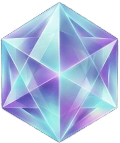

The problem
Issues get logged in one place, fixes tracked in another, and the latest drawing revision lives on someone’s desktop. When an auditor asks “show me,” the scramble starts.

ACCUQUAL QMS Sign in Request early accessEarly accessQuality management for manufacturers · Early access
AccuQual QMS pulls your issues, fixes, documents, training, audits, calibration, and supplier quality out of spreadsheets and inboxes and into one place, across every plant, so nothing sits stuck and nobody has to go hunting.
Why AccuQual exists
Issues get logged in one place, fixes tracked in another, and the latest drawing revision lives on someone’s desktop. When an auditor asks “show me,” the scramble starts.
One connected workspace: an issue links to its fix, the fix links to the document change, the document change triggers the training. The trail builds itself as people do the work.
Built for the shop floor, not a consultant’s binder. Plain language, fast screens, and a home page that tells each person what’s waiting on them right now.
Interactive demo
Watch a simulated CMM routine probe a bracket point by point. Hover or tap any point to see its readout. When a point falls outside tolerance, that’s where an issue starts.
What’s inside
Plain language, no jargon walls. Each module links to the others, so the paperwork follows the work.
Log a bad part in seconds, from the floor, with photos. Who found it, where, how many, and what happens to the suspect stock.
Turn an issue into a real fix: team, containment, root cause, corrective action, and a check that it actually worked. 8D steps when the customer asks for them.
One current revision, always. Review and approval routing, change history, and old revisions pulled out of circulation automatically.
Know who’s trained on what, and who isn’t yet. When a document changes, the people who use it get assigned the update.
Plan internal, supplier, and process audits. Run checklists on a tablet, capture findings, and send them straight into fixes.
Every gauge, caliper, mic, and CMM with its due date and history. Get warned before something goes overdue, not after.
Keep supplier issues, corrective action requests, and approvals together, so you know who’s performing and who needs a call.
One company account, many plants. Switch plants in a click, or see them side by side. Each plant keeps its own documents, gauges, and people.
Plant names and counts are illustrative samples.
Everyone lands on what needs them now. The quality manager sees what’s overdue across the plant. A supervisor sees their line. An operator sees their training and open tasks.
Items shown are illustrative samples.
Try it: drag and drop
A bad part just turned up on Line 2. Drag each card through Open, Contain, Fix, Verify, and Closed and watch the owner, due date, and next step follow it. Get all five to Closed to close the loop.
Keyboard: focus a card, press Space or Enter to pick it up, use the Left and Right arrow keys to move it between stages and Up and Down to reorder, then press Space or Enter to drop. Press Escape to cancel.
Issue logged, contained, fixed, verified, documented, and trained. In AccuQual, that whole trail is saved as it happens.
The closed loop
Every problem travels the same loop in AccuQual, and each step hands off to the next automatically. Click a step to follow it.
Where quality happens
Original concept artwork, now hands-on. Drag, turn, and tap each scene to take a reading. Use the button to view the original art. Every value here is an illustrative sample.
Pricing
We’re finalizing plans with our first manufacturing partners. Join early access to help shape AccuQual, get first look at pricing, and be first in line when we open the doors.
Thanks. We’ll be in touch at when early access opens.